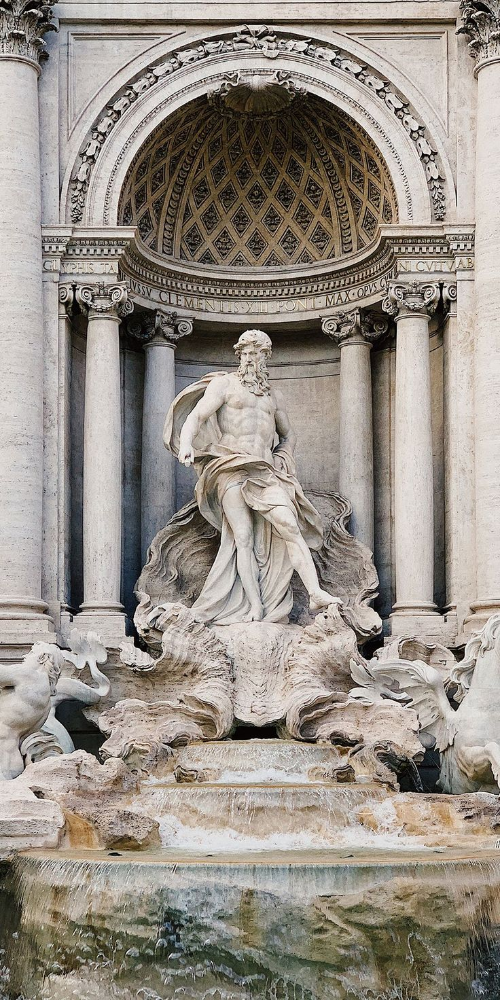
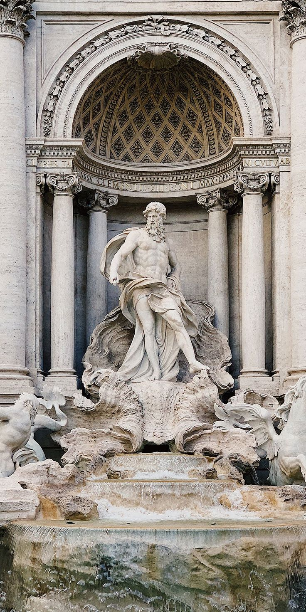

Trevi Fountain, is a famous Baroque-style fountain located in Rome, Italy. It is the largest and one of the most iconic fountains in the city. The fountain is known for its ornate and intricate design, featuring sculptures, statues, and reliefs, all constructed from travertine stone. At the center of the fountain, there is a large statue of Neptune, the Roman god of the sea, riding a chariot drawn by seahorses. The fountain is built against the facade of the Palazzo Poli and is a popular tourist attraction in Rome.